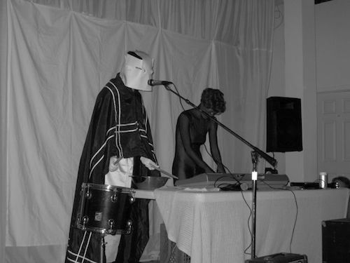
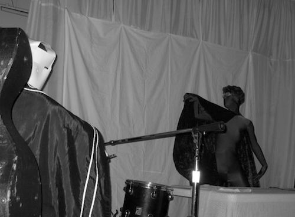
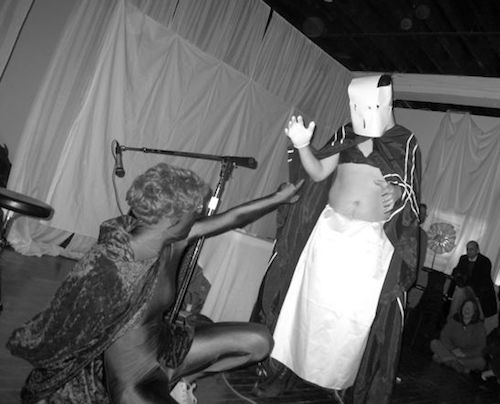
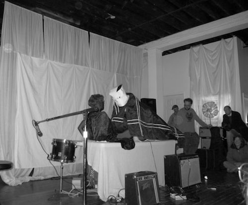
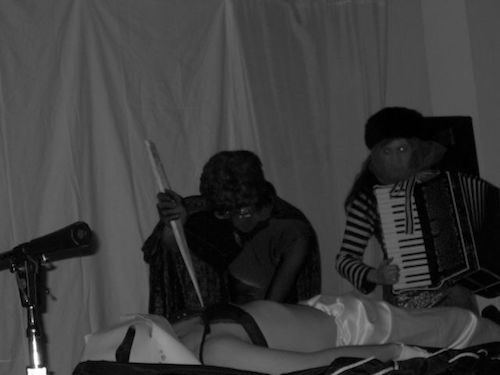
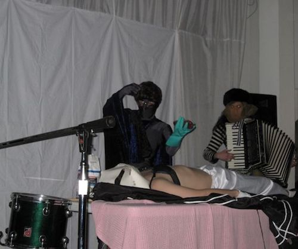
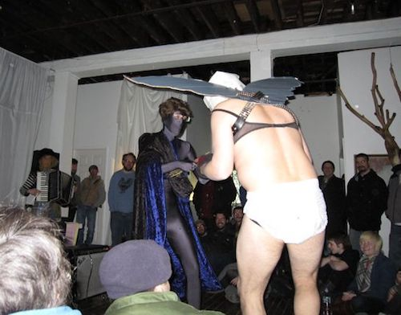
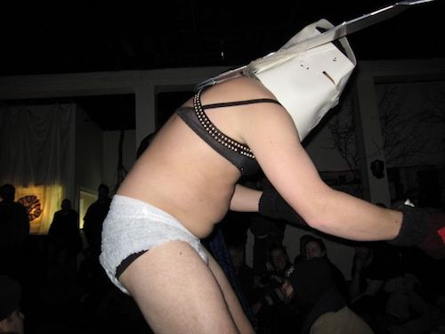

| I feel something In the air tonight Looks like a Vampire Night to me I feel something In the Other Eye Looks like a Vampire Night to me To mee - |  |
|  | We’re going to cut them in half and watch them regenerate into two separate worms Seriously You’re asking me about the weather? Interphase |
| I think I can keep up I know what the cold ones are Say it out loud Say it WAMPEER |
 |
|  | Where are we going? No The sunlight will kill you I’m not afraid Are you afraid? You don’t scare me In theory You are beautiful |
| This is what I am I don’t believe that Beautiful? I’m a killer This is the skin of a killer |
 |
|  | I don’t care You took me by surprise I’ve never wanted blood so much in my life |
| I don’t know how to do this Trust me? Close your eyes I can never lose control with you There’s something I’d like to try |
 |
|  | You're in love You're in love You're in love You're in love |
Performed for Valentine's Day 2009. Thanks to Andrea Salzman for accordian playing and Brian Blatt for the cape. The first (?) in a long series of surgery performances (thanks to the Liver). Congratulations to Joel & Blatt for correctly guessing our source material (prize: liver).
All pictures courtesy Joe Tunis.
Performance in memory of Continental Flight 3407.